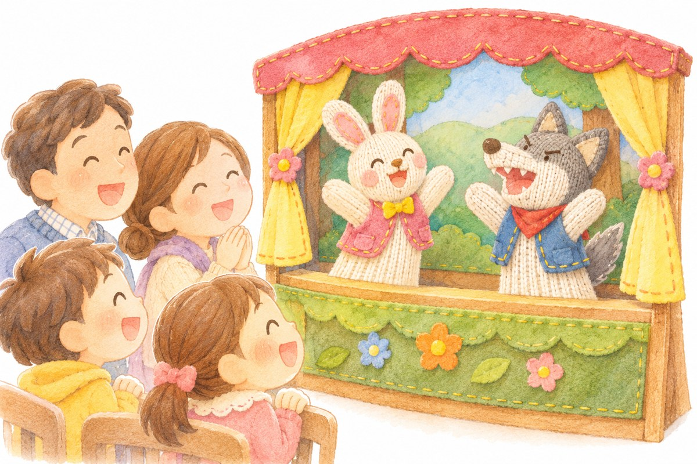

アマチュア人形劇の薦め
軍手ひとつで、
小さな舞台で軍手人形が演じ、子どもも大人も笑顔で観ているところ
軍手ひとつで、
物語が動き出す
人形劇は、子どもを楽しませるだけのものではありません。絵も、お話も、音楽も、工作も。好きなことが一つの舞台に集まる、大人にこそ向いた趣味です。特別な才能も、広い場所も、高い道具もいりません。


案内役から、ひとことはじめまして。人形劇って「子ども向け」だと思っていませんか？ 実は、作る側がいちばん楽しいんです。まずはこのページで全体をのぞいてみてくださいね。
アマチュア人形劇って、どんなもの？
アマチュア人形劇とは、ふつうの市民が仲間と作り、地域で上演する人形劇のことです。公民館や図書館、保育園などが、そのまま舞台になります。
人形は、軍手や靴下のような身近なものでも作れます。人形に役を演じさせ、観客の前で動かしたときに、人形劇が始まります。
なぜ今、おすすめなの？
- 好きなことを生かして、作る側になれる
- 人前に出るのが苦手でも、人形の陰から演じられる
- 仲間と力を合わせる楽しさがある
- 観客の反応で、その場で舞台が変わる
- 親子や世代、地域がつながる
世界にも仲間がいます。国際人形劇連盟（UNIMA）は1929年に設立され、毎年3月21日を「世界人形劇の日」としています。日本だけの小さな趣味ではありません。
5つの魅力をのぞいてみる
まずは「芸術」のページから。人形劇の舞台に、どんな楽しみが集まっているのか見てみましょう。
芸術のページへ →